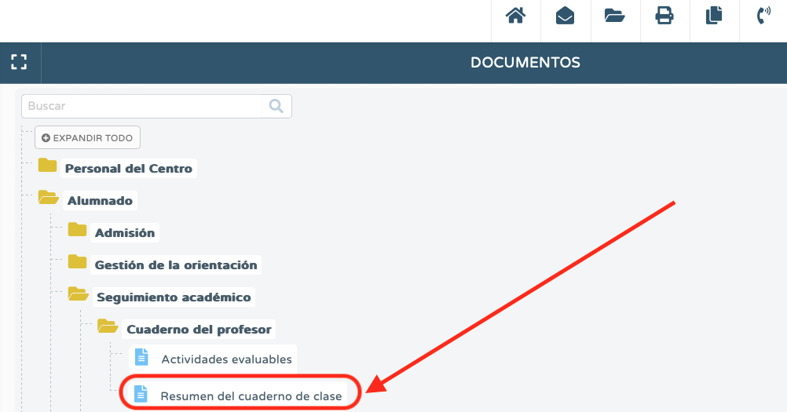
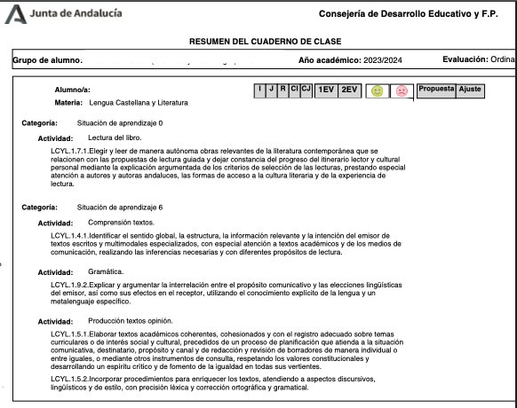
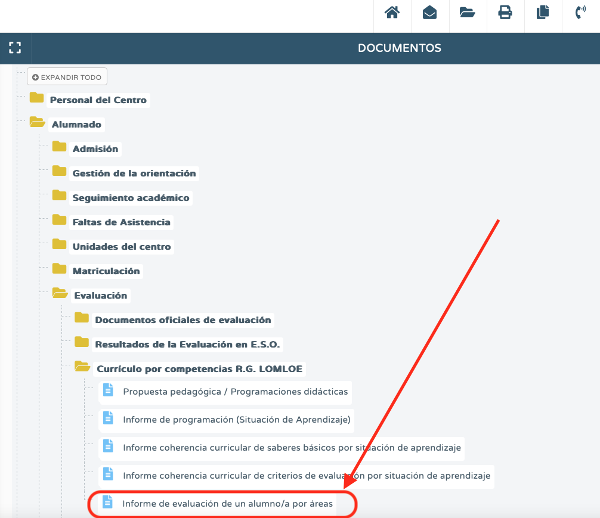
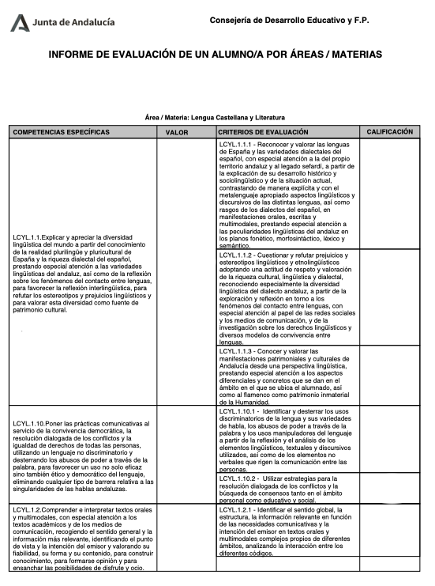
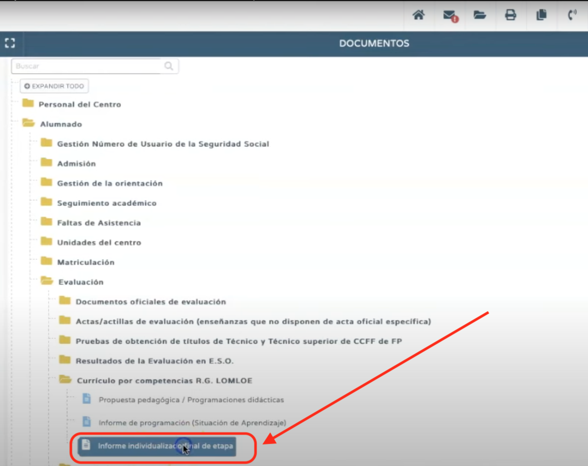
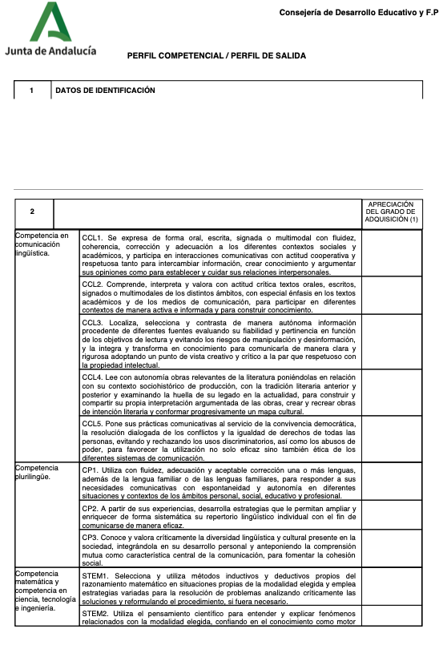

Una de las ventajas más importantes que tiene el uso del cuaderno de Séneca es la posibilidad de generar informes de evaluación de forma rápida. Son varios los informes que podemos generar:
-Resumen del cuaderno: recoge el detalle de todas las calificaciones obtenidas por cada alumna / o actividad evaluable por actividad evaluable.
|  |  |
| Ruta para generar el informe resumen del cuaderno | Imagen del informe resumen del cuaderno |
-Informe de evaluación por área: contiene el detalle de las calificaciones obtenidas de cada alumna / o competencia específica por competencia específica y criterio por criterio.
|  |  |
| Ruta para la obtención del informe | Imagen del informe |
-Perfil competencial o de salida: contiene el grado de adquisición de cada descriptor operativo de cada competencia clave. Sólo se puede generar si se es tutor / a del grupo.
|  |  |
| Ruta para generar el informe perfil de salida | Imagen del informe perfil de salida |